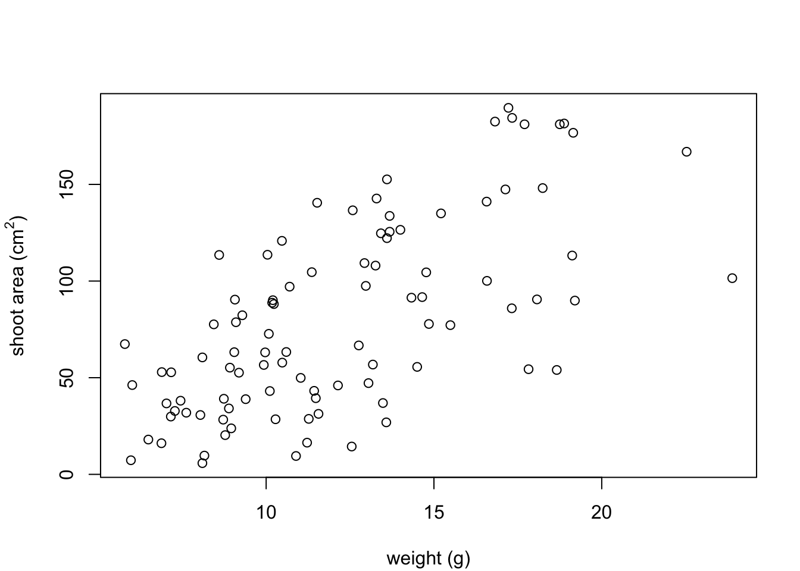
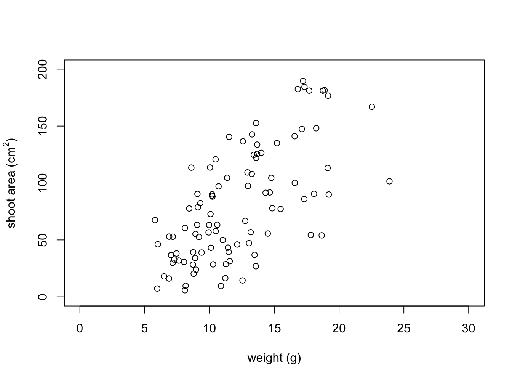
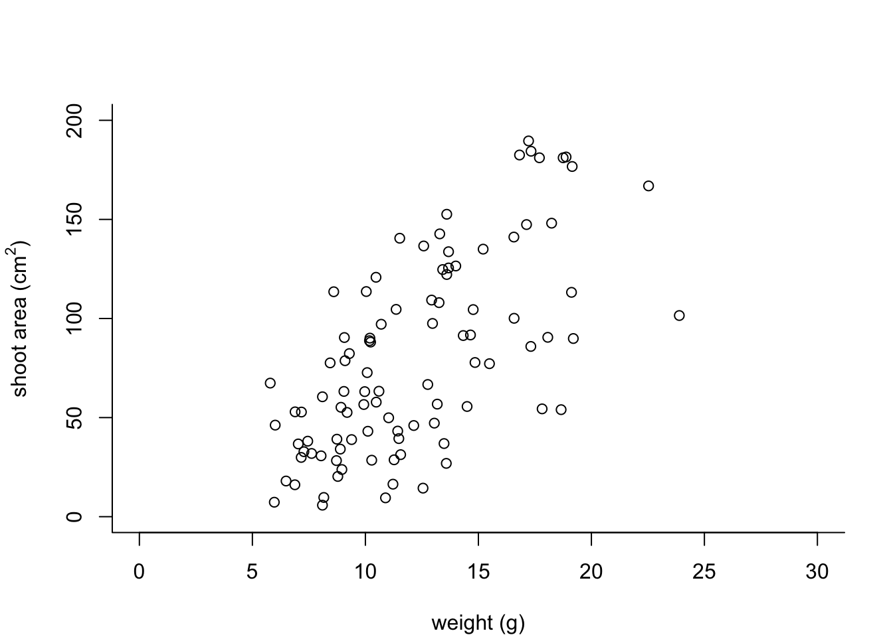
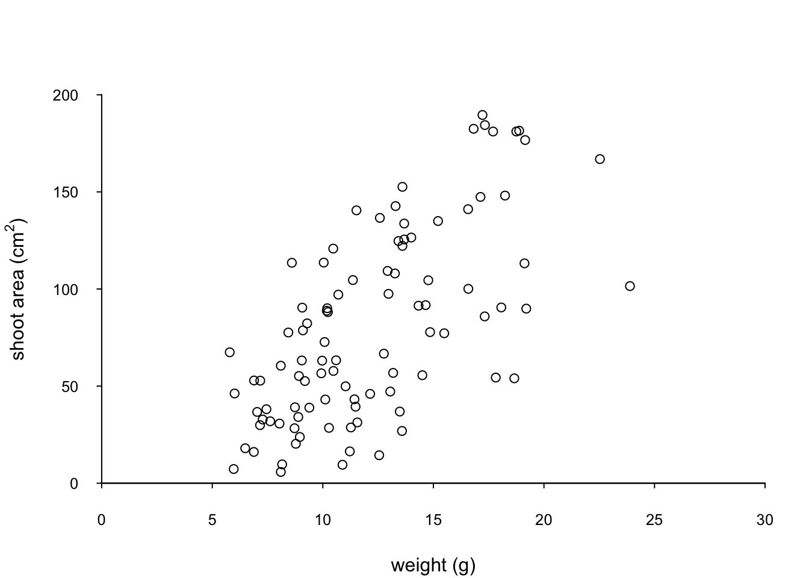
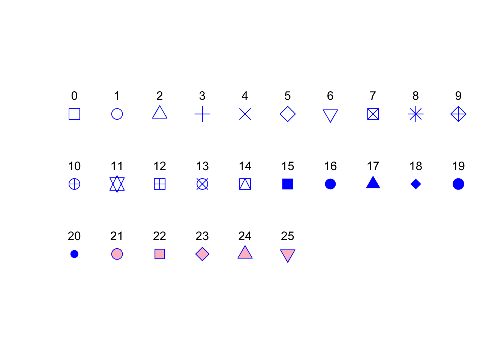
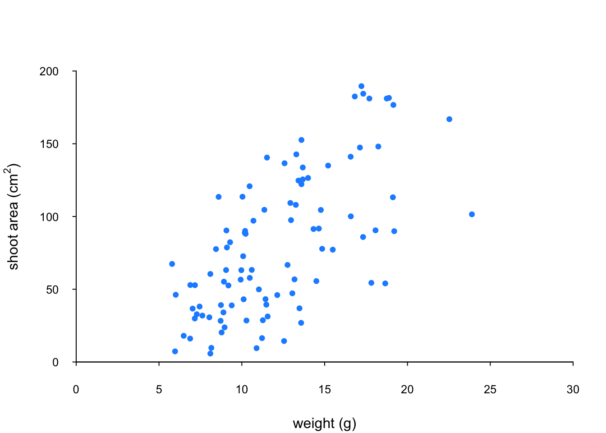
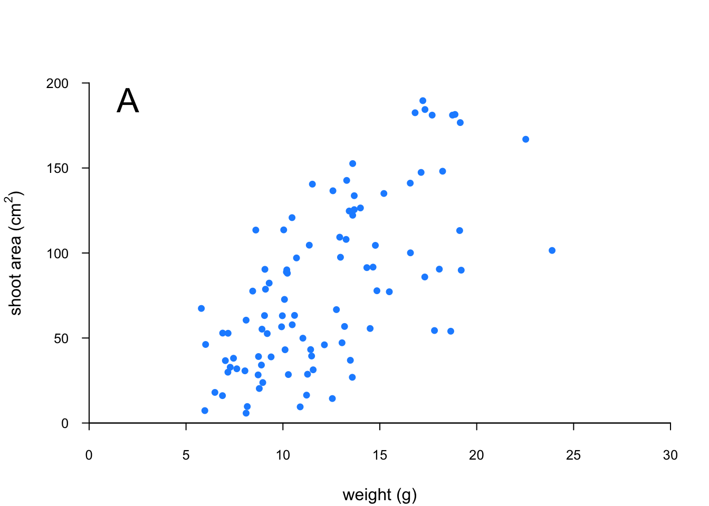
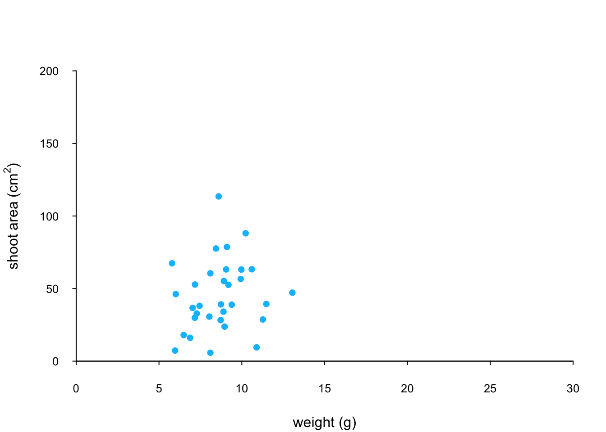

4.3 Customising plots
All of the plots we’ve created so far in this Chapter are more than suitable for exploring your data. If however, you’d like to make them a little prettier (for your thesis, publication or even your own amusement) you’ll need to invest some time learning how to customise your plots. The good news is that the base R graphics system allows you to change almost any aspect of your plot. There are however a couple of things to bear in mind. Firstly, although many of the approaches we introduce in this section will work with most base R plotting functions, there’s no true consistency between functions. What works with the plot() function isn’t guaranteed to necessarily work with the boxplot() function. This can be a little frustrating to begin with but gets easier the more experience you gain. If you crave a little more consistency take a look at Chapter 5 where we introduce the excellent ggplot2 package. Secondly, when you start customising plots you’re confronted with a huge number of options and arguments to try and remember. This isn’t necessarily a bad thing as this is what makes base R graphics so flexible but it’s a lot to take in. Often a quick Google or peek at the relevant help pages will jog your memory. Thirdly, learning how to customise plots in base R isn’t just about what code you need to use, it’s also about learning the process of building a plot. We often start with a basic layout of our plot and then add layers of complexity until we achieve the desired results. This requires a little experience (and trial and error), but again becomes easier with practice. Lastly, this section covers the basics of how to customise base R graphics and most (if not all) of these approaches will not work for plots created with the lattice graphics system.
4.3.1 Customising with arguments
Let’s return to the basic plot we made previously in this Chapter. This was a simple scatterplot to examine the relationship between the shootarea and weight variables in the flowers data frame.

Whilst this plot is adequate for data exploration it’s not going to cut the mustard if we want to share it with others. At the very least it could do with a better set of axes labels, more informative axes scales and some nicer plotting symbols.
Let’s start with the axis labels. To add labels to the x and y axes we use the corresponding ylab = and xlab = arguments in the plot() function. Both of these arguments need character strings as values.

OK, that looks a little better but the units (cm2) looks a little ugly as we should format the 2 as a superscript. To convert to a superscript we need to use a combination of the expression() and paste() functions. The expression() function allows us to format the superscript (and other mathematical expressions - see ?plotmath for more details) with the ^ symbol and the paste() function pastes together the elements "shoot area (cm"^"2" and ) to create our axis label.
plot(flowers$weight, flowers$shootarea,
xlab = "weight (g)",
ylab = expression(paste("shoot area (cm"^"2",")")))
But now we have a new problem, the very top of the y axis label gets cut off. To remedy this we need to adjust the plot margins using the par() function and the mar = argument before we plot the graph. The par() function is the main function for setting graphical parameters in base R and the mar = argument sets the size of the margins that surround the plot. You can adjust the size of the margins using the notation par(mar = c(bottom, left, top, right) where the arguments bottom, left, top and right are the size of the corresponding margins. By default R sets these margins as mar = c(5.1, 4.1, 4.1, 2.1) with these numbers specifying the number of lines in each margin. Let’s increase the size of the left margin a little bit and decrease the size of the right margin by a smidge.
par(mar = c(4.1, 4.4, 4.1, 1.9))
plot(flowers$weight, flowers$shootarea,
xlab = "weight (g)",
ylab = expression(paste("shoot area (cm"^"2",")")))
That looks better. Now let’s increase the range of our axes scales so we have a bit of space above and to the right of the data points. To do this we need to supply a minimum and maximum value using the c() function to the xlim = and ylim = arguments. We’ll set the x axis scale to run from 0 to 30 and the range of the y axis scale from 0 to 200.
par(mar = c(4.1, 4.4, 4.1, 1.9))
plot(flowers$weight, flowers$shootarea,
xlab = "weight (g)",
ylab = expression(paste("shoot area (cm"^"2",")")),
xlim = c(0, 30), ylim = c(0, 200))
And while we’re at it let’s remove the annoying box all the way around the plot to just leave the y and x axes using the bty = "l" argument.
par(mar = c(4.1, 4.4, 4.1, 1.9))
plot(flowers$weight, flowers$shootarea,
xlab = "weight (g)",
ylab = expression(paste("shoot area (cm"^"2",")")),
xlim = c(0, 30), ylim = c(0, 200), bty = "l")
OK, that’s looking a lot better already after only a few adjustments. One of the things that we still don’t like is that by default the x and y axes do not intersect at the origin (0, 0) and both axes extend beyond the maximum value of the scale by a little bit. We can change this by setting the xaxs = "i" and yaxs = "i" arguments when we use the par() function. While we’re about it let’s also rotate the y axis tick mark labels so they read horizontally using by setting the las = 1 argument in the plot() function and make them a tad smaller with the cex.axis = argument. The cex.axis = argument requires a number giving the amount by which the text will be magnified (or shrunk) relative to the default value of 1. We’ll choose 0.8 making our text 20% smaller. We can also make the tick marks just a little shorter by setting tcl = -0.2. This value needs to be negative as we want the tick marks to be outside the plotting region (see what happens if you set it to tcl = 0.2).
par(mar = c(4.1, 4.4, 4.1, 1.9), xaxs = "i", yaxs = "i")
plot(flowers$weight, flowers$shootarea,
xlab = "weight (g)",
ylab = expression(paste("shoot area (cm"^"2",")")),
xlim = c(0, 30), ylim = c(0, 200), bty = "l",
las = 1, cex.axis = 0.8, tcl = -0.2)
We can also change the type of plotting symbol, the colour of the symbol and the size of the symbol using the pch =, col = and cex = arguments respectively. The pch = argument takes an integer value between 0 and 25 to define the type of plotting symbol. Symbols 0 to 14 are open symbols, 15 to 20 are filled symbols and 21 to 25 are symbols where you can specify a different fill colour and outside line colour. Here’s a summary table displaying the value and corresponding symbol type.

The col = argument changes the colour of the plotting symbols. This argument can either take an integer value to specify the colour or a character string giving the colour name. For example, col = "red" changes the plotting symbol to red. To see a list of all 657 preset colours available in base R use the colours() function (you can also use colors()) or perhaps even easier see this link. More colour options are available with other packages (see the excellent RColorBrewer package) or you can even ‘mix’ your own colours using the colorRamp() function (see ?colorRamp for more details).
The cex = argument allow you to change the size of the plotting symbol. This argument works in the same way as the other cex arguments we’ ve already seen (i.e. cex.axis) and requires a numeric value to indicate the proportional increase or decrease in size relative to the default value of 1.
Let’s change the plotting symbol to a filled circle (16), the colour of the symbol to “dodgerblue1” and decrease the size of the symbol by 10%.
par(mar = c(4.1, 4.4, 4.1, 1.9), xaxs = "i", yaxs = "i")
plot(flowers$weight, flowers$shootarea,
xlab = "weight (g)",
ylab = expression(paste("shoot area (cm"^"2",")")),
xlim = c(0, 30), ylim = c(0, 200), bty = "l",
las = 1, cex.axis = 0.8, tcl = -0.2,
pch = 16, col = "dodgerblue1", cex = 0.9)
The last thing we’ll do is add a text label to the plot so we can identify it. Perhaps this plot will be one of a series of plots we want to include in the same figure (see the section on plotting multiple graphs to see how to do this) so it would be nice to be able to refer to it in our figure title. To do this we’ll use the text() function to add a capital ‘A’ to the top right of the plot. The text() function needs an x = and a y = coordinate to position the text, a label = for the text and we can use the cex = argument again to change the size of the text.
par(mar = c(4.1, 4.4, 4.1, 1.9), xaxs = "i", yaxs = "i")
plot(flowers$weight, flowers$shootarea,
xlab = "weight (g)",
ylab = expression(paste("shoot area (cm"^"2",")")),
xlim = c(0, 30), ylim = c(0, 200), bty = "l",
las = 1, cex.axis = 0.8, tcl = -0.2,
pch = 16, col = "dodgerblue1", cex = 0.9)
text(x = 28, y = 190, label = "A", cex = 2)
We think our plot now looks pretty good so we’ll stop here! There are, however, a multitude of other arguments which you can play around with to change the look of your plots. The best place to quickly look for more information is the help page associated with the par() function (?par) or just do a quick Google search. Here’s a table of the more commonly used arguments.
| Argument | Description |
|---|---|
adj |
controls justification of the text (0 left justified, 0.5 centered, 1 right justified) |
bg |
specifies the background colour of the plot(i.e. : bg = "red", bg = "blue") |
bty |
controls the type of box drawn around the plot, values include: "o", "l", "7", "c", "u" , "]" (the box looks like the corresponding character); if bty = "n" the box is not drawn |
cex |
controls the size of text and symbols in the plotting area with respect to the default value of 1. Similar commands include: cex.axis controls the numbers on the axes, cex.lab numbers on the axis labels, cex.main the title and cex.sub the sub-title |
col |
controls the colour of symbols; additional argument include: col.axis, col.lab, col.main, col.sub |
font |
an integer controlling the style of text (1: normal, 2: bold, 3: italics, 4: bold italics); other argument include font.axis, font.lab, font.main, font.sub |
las |
an integer which controls the orientation of the axis labels (0: parallel to the axes, 1: horizontal, 2: perpendicular to the axes, 3: vertical) |
lty |
controls the line style, can be an integer (1: solid, 2: dashed, 3: dotted, 4: dotdash, 5: longdash, 6: twodash) |
lwd |
a numeric which controls the width of lines. Works as per cex |
pch |
controls the type of symbol, either an integer between 0 and 25, or any single character within quotes " " |
ps |
an integer which controls the size in points of texts and symbols |
pty |
a character which specifies the type of the plotting region, “s”: square, “m”: maximal |
tck |
a value which specifies the length of tick marks on the axes as a fraction of the width or height of the plot; if tck = 1 a grid is drawn |
tcl |
a value which specifies the length of tick marks on the axes as a fraction of the height of a line of text (by default tcl = -0.5) |
4.3.2 Building plots
For even more control over how your plot looks we can build our plot up in layers, customising each step as we go along. For example, perhaps we want to create a plot of shootarea and weight as we did before but this time we want to change the symbol colours of our data points depending on what level of nitrogen the plants were exposed to. The general approach is to use the high level plotting function plot() to create the general plot (axes, axes labels etc) but without the data points by including the type = "n" argument. We then use the low level function points() to add the plotting symbols for each nitrogen level separately choosing a different colour for each set of points. Let’s go through this approach a step at a time. First we’ll make the plot but suppress plotting the data using the type = "n" argument in the plot() function.
par(mar = c(4.1, 4.4, 4.1, 1.9), xaxs = "i", yaxs = "i")
plot(flowers$weight, flowers$shootarea,
type = "n",
xlab = "weight (g)",
ylab = expression(paste("shoot area (cm"^"2",")")),
xlim = c(0, 30), ylim = c(0, 200), bty = "l",
las = 1, cex.axis = 0.8, tcl = -0.2)
We can now use the points() function in combination with our square bracket [ ] skills to only select those data from the low level of nitrogen. Whilst using the points() function we can also set the symbol type and the symbol colour using the pch = and col = arguments.
par(mar = c(4.1, 4.4, 4.1, 1.9), xaxs = "i", yaxs = "i")
plot(flowers$weight, flowers$shootarea,
type = "n",
xlab = "weight (g)",
ylab = expression(paste("shoot area (cm"^"2",")")),
xlim = c(0, 30), ylim = c(0, 200), bty = "l",
las = 1, cex.axis = 0.8, tcl = -0.2)
points(x = flowers$weight[flowers$nitrogen == "low"],
y = flowers$shootarea[flowers$nitrogen == "low"],
pch = 16, col = "deepskyblue")
We can now use the points() function again to plot data for the medium level of nitrogen and change the symbol colour to something different. Notice that we do not reuse the plot() function here as we are just using the low level function points() to add data points to the existing plot.
points(x = flowers$weight[flowers$nitrogen == "medium"],
y = flowers$shootarea[flowers$nitrogen == "medium"],
pch = 16, col = "yellowgreen")
And finally to add the high level of nitrogen data points to the plot and add our text label (‘A’) to the plot as before.
points(x = flowers$weight[flowers$nitrogen == "high"],
y = flowers$shootarea[flowers$nitrogen == "high"],
pch = 16, col = "deeppink3")
text(x = 28, y = 190, label = "A", cex = 2)
The only thing left to do is to add a legend to the plot to let your reader know what nitrogen level each colour corresponds to. We’ll use another low level function,legend() to do this. The legend() function requires us to provide the x and y coordinates to specify the position of the top left of the legend in the plot, a vector of colours, symbol types and labels to use in the legend. The bty = "n" argument stops a border being drawn around the legend and the title = argument gives the legend a title.
leg_cols <- c("deepskyblue", "yellowgreen", "deeppink3")
leg_sym <- c(16, 16, 16)
leg_lab <- c("low", "medium", "high")
legend(x = 1, y = 200, col = leg_cols, pch = leg_sym,
legend = leg_lab, bty = "n",
title = "Nitrogen level")
If you want to see all the code together.
par(mar = c(4.1, 4.4, 4.1, 1.9), xaxs="i", yaxs="i")
plot(flowers$weight, flowers$shootarea,
type = "n",
xlab = "weight (g)",
ylab = expression(paste("shoot area (cm"^"2",")")),
xlim = c(0, 30), ylim = c(0, 200), bty = "l",
las = 1, cex.axis = 0.8, tcl = -0.2)
points(x = flowers$weight[flowers$nitrogen == "low"],
y = flowers$shootarea[flowers$nitrogen == "low"],
pch = 16, col = "deepskyblue")
points(x = flowers$weight[flowers$nitrogen == "medium"],
y = flowers$shootarea[flowers$nitrogen == "medium"],
pch = 16, col = "yellowgreen")
points(x = flowers$weight[flowers$nitrogen == "high"],
y = flowers$shootarea[flowers$nitrogen == "high"],
pch = 16, col = "deeppink3")
text(x = 28, y = 190, label = "A", cex = 2)
leg_cols <- c("deepskyblue", "yellowgreen", "deeppink3")
leg_sym <- c(16, 16, 16)
leg_lab <- c("low", "medium", "high")
legend(x = 1, y = 200, col = leg_cols, pch = leg_sym,
legend = leg_lab, bty = "n",
title = "Nitrogen level")The table below highlights some of the low level potting functions you might find useful.
| Function | Description |
|---|---|
lines() |
add connected lines to a plot |
curve() |
draws a curve corresponding to a function |
arrows() |
draws arrows between 2 points |
text() |
adds text to a plot |
mtext() |
adds text to one of the 4 plot margins |
axis() |
adds an axis to the current plot |
rect() |
draws a rectangle |
legend() |
adds a legend to the plot |
points() |
adds points to the plot |
abline() |
adds a straight line to a plot |
grid() |
adds a rectangular grid to the current plot |
polygon() |
draws a polygon |